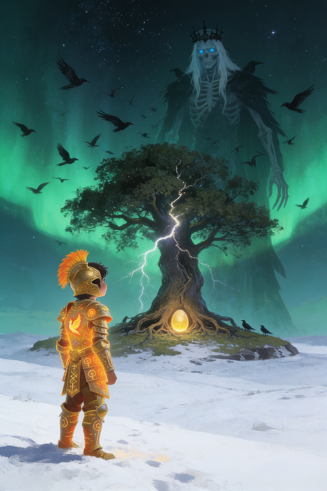
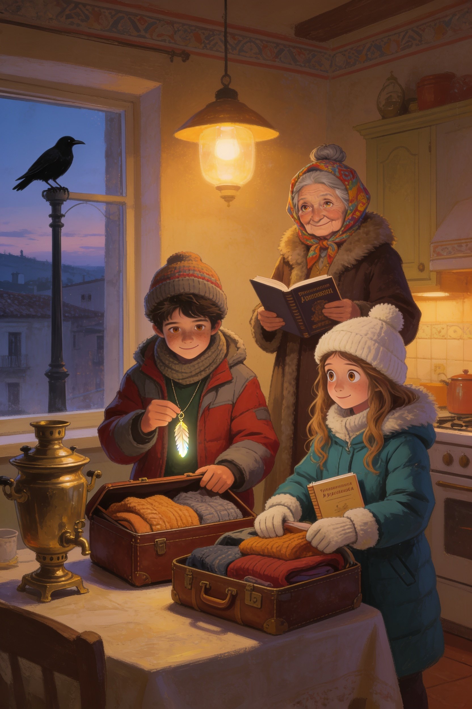
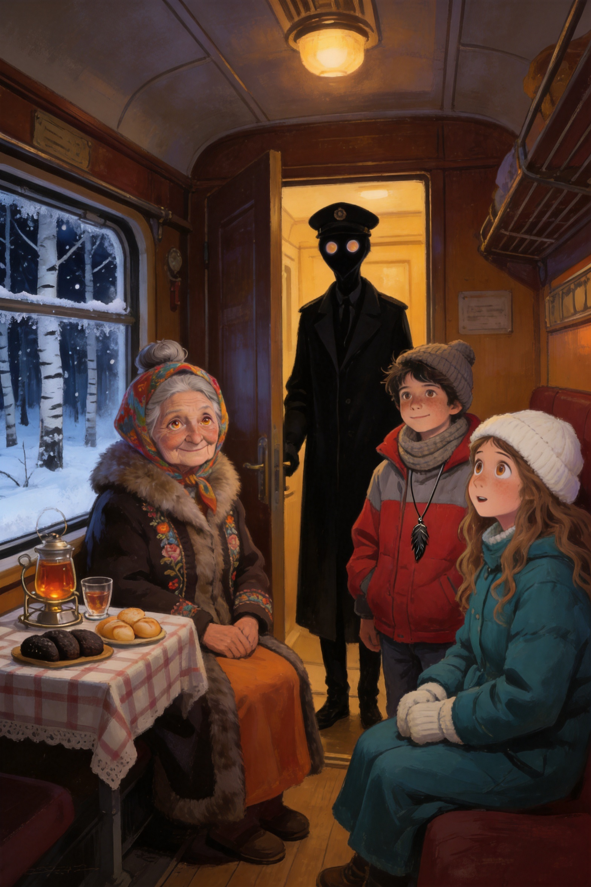
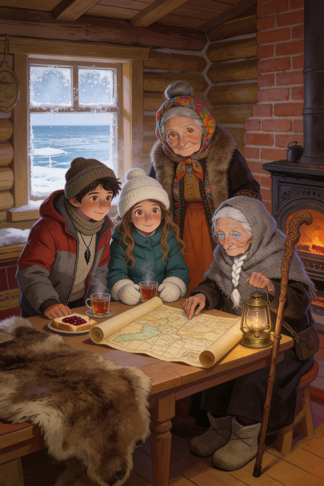
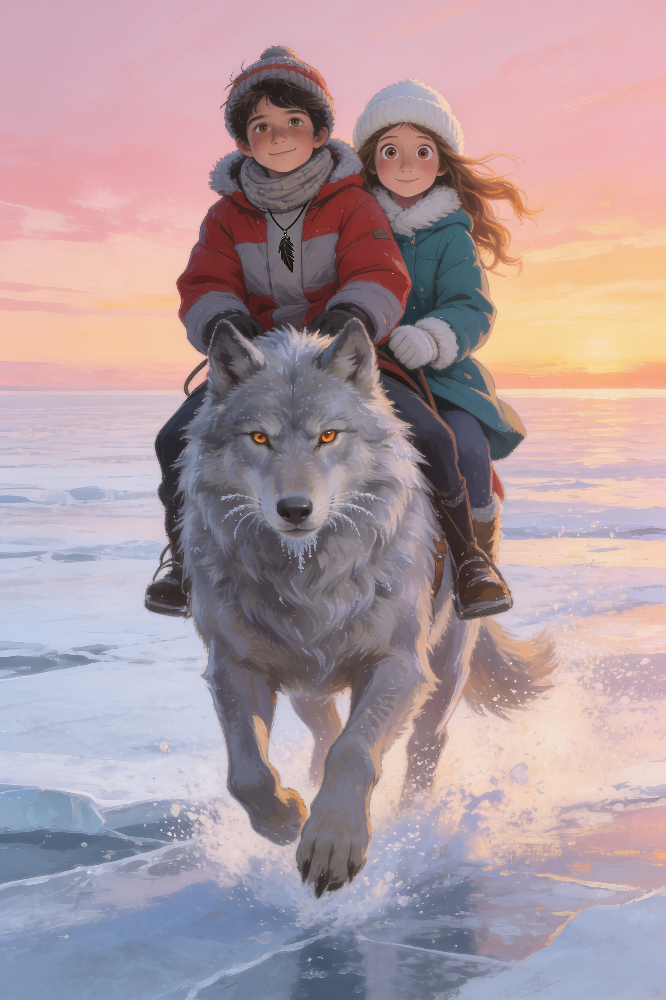
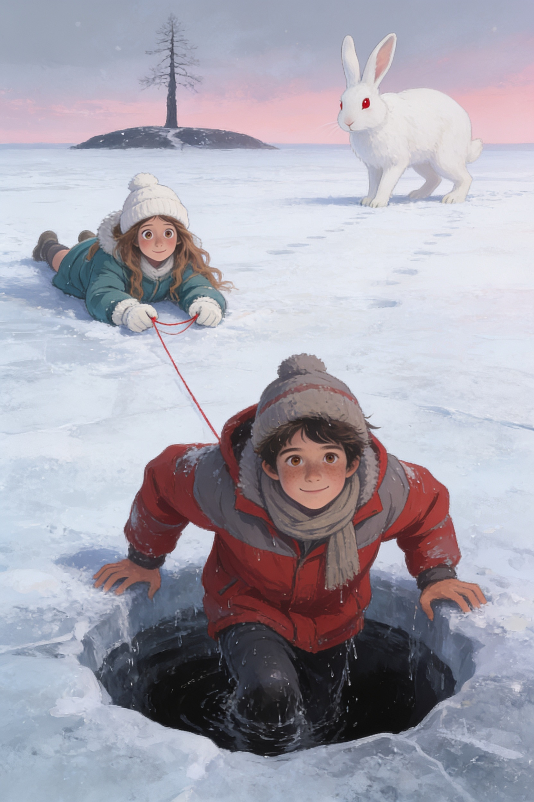
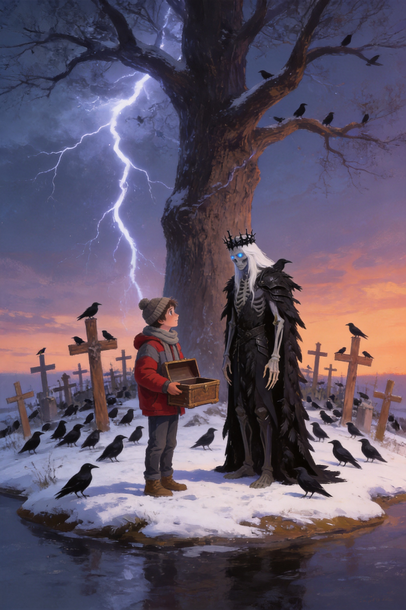
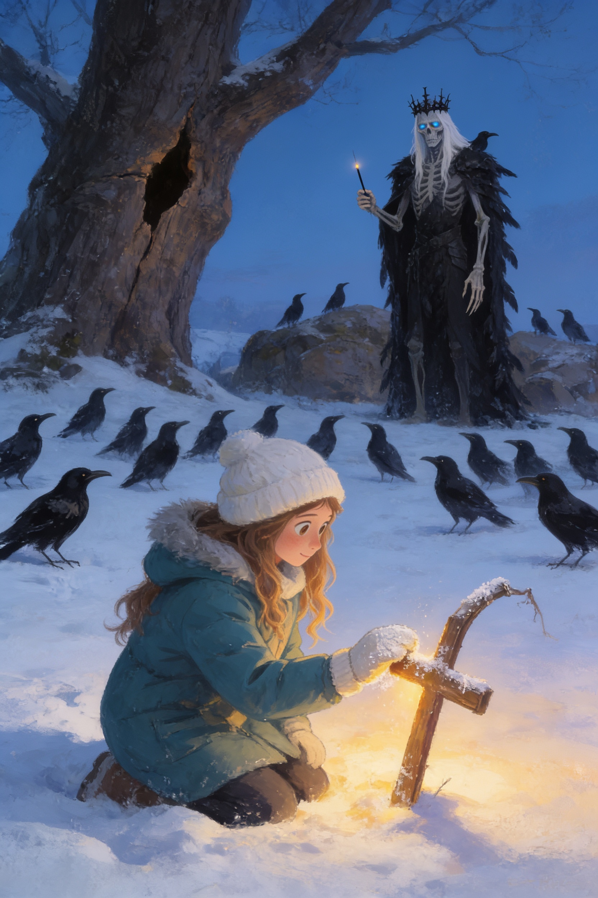
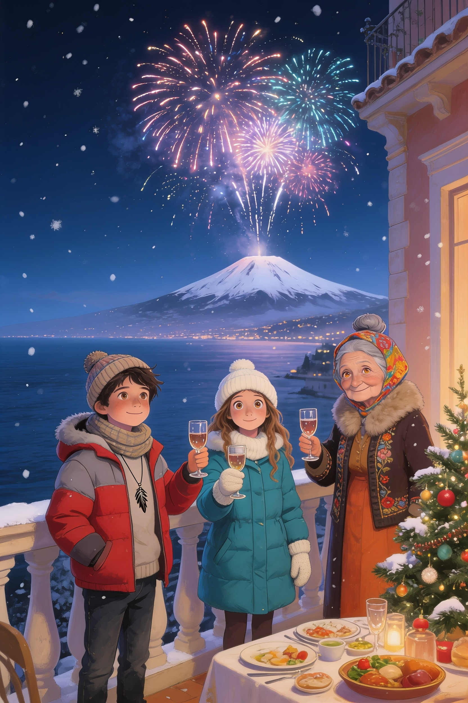

Il Custode
e l'Isola
dell'Immortale
Il Custode dell'Etna · Libro 4
Vlad Editore

Il Custode dell'Etna · Libro 4
Vlad Editore
Il Custode dell'Etna · Libro 4
Capitolo 1
✦ ✦ ✦
Il corvo era tornato anche quella mattina. Stava sul lampione davanti alla casa di nonna Tanya, nero come un buco nel cielo bianco di dicembre, e non faceva niente. Non gracchiava, non mangiava, non volava via. Guardava la finestra.
— Sono tre giorni — disse Vlad, appoggiando la fronte al vetro freddo. — Tre giorni che sta lì.
— Lo so — rispose la nonna, senza alzare gli occhi dalla valigia. — L'ho contato anch'io.
Sul letto c'erano calzettoni di lana, due maglioni arancioni, una sciarpa grigia lunga come un serpente e un paio di stivali foderati di pelliccia, che a Taormina non avevano mai visto la neve e sembravano offesi di essere usciti dall'armadio.
Le vacanze di Natale erano cominciate da due giorni, e per la prima volta Vlad non pensava ai regali.
— Quindi andiamo davvero — disse Vlad.
— Andiamo. — La nonna chiuse la prima valigia con due scatti. — Zinaida non scriverebbe mai «vieni» se potesse dire «aspetta». Quarant'anni che ci conosciamo, e in quarant'anni mi ha chiesto aiuto una volta sola.
— E se fosse una trappola? — chiese Vlad. — Il corvo...
— Il corvo è una trappola di sicuro. La lettera no. — Si sedette sul bordo del letto e lo guardò con quegli occhi color ambra che vedevano più di quello che dicevano. — Vladik, il Libro dei Custodi dice una cosa che nessuno ricorda: quando una porta antica comincia ad aprirsi, può aprirsi in due modi. Qualcuno la spinge da fuori, o qualcuno la chiama da dentro.
— E noi che cosa facciamo?
— Andiamo a vedere chi la chiama.
Il ciondolo sul petto di Vlad si scaldò, piano, come un gatto che si gira nel sonno.
Ludovica arrivò alle quattro, con il cappello bianco già in testa, anche se fuori c'erano dodici gradi.
— Mia mamma ha detto sì — annunciò, appena la nonna aprì la porta. — Ha detto che una nonna russa, un viaggio in treno e un compagno di classe sono la gita più sicura del mondo. Non le ho detto del lupo.
— Quale lupo? — chiese Vlad.
— Non lo so ancora. Ma nelle fiabe russe c'è sempre un lupo. Ho letto tutto, ieri notte. Baba Yaga, Koschei, l'Uccello di Fuoco, il lupo grigio. — Posò sul tavolo il quaderno verde, quello dei dossier, e sulla copertina c'era scritto, in stampatello, DOSSIER K. — Ho fatto una lista di tutto quello che può andare storto.
— Quanto è lunga? — chiese la nonna, divertita.
— Quattro pagine. Ma sono fitte.

Il telefono di Ludovica vibrò. Era il gruppo della classe, che la sera prima si chiamava «Squadra Etna» e quella sera si chiamava «Operazione Neve».
— Mia dice che canta la canzone di Natale in russo per portarvi fortuna — lesse. — Beatrice dice di non congelarsi il naso. Martina dice di portare una foto di un orso. Jaela dice che a Mosca fanno pattinaggio e che, se cadiamo, dobbiamo cadere con stile.
— Sofia? — chiese Vlad.
— Sofia ha mandato un messaggio vocale. — Ludovica lo fece partire.
La voce di Sofia era allegra e un po' seria: — Impara queste, Ludovica. Spasibo, grazie. Pozhaluysta, per favore. Ya ne boyus', non ho paura. L'ultima dilla anche se hai paura. Funziona lo stesso.
Ludovica la ripeté tre volte, a bassa voce, con l'accento di una che ha studiato spagnolo per sbaglio.
L'ultimo giorno di scuola prima delle vacanze, la professoressa Siligato aveva trattenuto Vlad in classe, dopo la campanella. Gli aveva messo in mano un pacchetto piatto, avvolto nella carta di giornale.
— Non è un regalo di Natale — aveva detto, con la matita infilata tra i ricci bianchi. — È un regalo di viaggio. Aprilo quando sei lontano.
Vlad lo aprì adesso, sul letto di nonna Tanya, tra i maglioni. Era un quaderno con la copertina di tela blu notte, e sulla prima pagina c'era scritto con la sua calligrafia ordinata:
«Ai viaggiatori: scrivete tutto. Le cose che si scrivono non si perdono. Le cose che non si scrivono si trasformano in leggende. M. S.»
— Che cosa vuol dire? — chiese Ludovica.
— Vuol dire che dobbiamo tornare — disse Vlad, e chiuse il quaderno con più delicatezza del necessario.
La sera del 21 dicembre, la nonna mise le tre valigie nell'ingresso, in fila, come soldati prima della parata. Poi andò in cucina e tornò con un pacchetto avvolto in un panno ricamato.
— Questo lo porto io — disse. — Non vi dico che cosa c'è dentro. Lo scoprirete se serve.
— E se non serve? — chiese Ludovica.
— Allora sarà stata una buona giornata.
Vlad si affacciò alla finestra per l'ultima volta. Il corvo era sempre sul lampione. Quando i loro occhi si incontrarono, l'uccello aprì il becco e, per un attimo, Vlad sentì una voce che non era la sua: sottile, secca, come carta che brucia.
«Ti aspetto.»
Poi il corvo spiegò le ali e si alzò nel buio, verso nord.
Vlad non disse niente a nessuno. Chiuse la finestra, abbassò la tenda e si voltò verso la nonna e Ludovica.
— Che cosa ha detto? — chiese la nonna, che aveva visto la sua faccia.
— Ha detto che mi aspetta.
Per un momento nessuno parlò. Fuori, in lontananza, l'Etna fumava piano, come una persona che pensa.
— Allora non lo faremo aspettare troppo — disse Ludovica, e aprì il quaderno verde. Sotto DOSSIER K, in stampatello, scrisse la prima riga:
1. Il corvo parla. Quindi qualcuno ci ascolta.
Poi, più piccolo, ne aggiunse un'altra:
2. Non avere paura. Oppure averla, ma andare lo stesso.
Il Custode dell'Etna · Libro 4
Capitolo 2
✦ ✦ ✦
A Mosca faceva meno quindici gradi. Ludovica lo scoprì appena la porta dell'aereo si aprì, quando l'aria entrò come un pugno gentile e le tolse tutto il fiato dal naso.
— Ha detto meno quindici? — chiese, con la voce che usciva a nuvolette.
— Non è freddo — disse nonna Tanya, già avvolta nella sua sciarpa-serpente. — È un clima di carattere.
Vlad non disse niente. Respirava a bocca aperta, curioso, e la neve gli si posava sulle ciglia. Aveva lasciato la Russia a nove anni. Aveva dimenticato che l'aria potesse avere un odore: di ferro, di legna bruciata, di pane. Gli sembrava di averlo sempre saputo.
Alla stazione Yaroslavsky, la nonna comprò tre biglietti per un treno che si chiamava, semplicemente, «Il Nord». Era lungo, verde e rosso, con i finestrini coperti di brina e una locomotiva che sbuffava come un drago stanco.
La loro cabina aveva due cuccette, una sopra l'altra, e un tavolino con una tovaglia a quadretti. Sul tavolino c'era già un bicchiere con il portabicchieri di metallo, e dentro fumava del tè.
— Chi lo ha portato? — chiese Ludovica.
— La provodnitsa — disse la nonna. — La signora del vagone. In Russia il tè arriva sempre prima di te.
Il treno partì senza fischi, piano, e Mosca scivolò via dietro il vetro: palazzi alti, luci arancioni, una ragazza con un cane che correva sulla neve. Poi vennero i boschi di betulle, bianchi su bianco, e il cielo che diventava viola.
Cenarono con quello che la nonna aveva portato: pane nero, formaggio, cetrioli sott'aceto e pirozhki alla carne, ancora tiepidi nel panno ricamato.
— Mangiate — disse. — Domani sarà lungo.
Ludovica aprì il quaderno verde e scrisse, con la lingua tra i denti:
3. Il treno ha trentadue vagoni. Il nostro è il settimo. Il controllore non ha ancora sorriso.
— Perché scrivi del controllore? — chiese Vlad.
— Perché i controllori sorridono sempre un po'. Quando non lo fanno, vuol dire che pensano a qualcos'altro.
Vlad la guardò. Non aveva mai pensato a una cosa del genere, e adesso non riusciva a smettere.

Il controllore arrivò verso le dieci. Era un uomo alto e magro, con un cappotto nero troppo lungo e un berretto calato sugli occhi. Controllò i biglietti uno per uno, lentamente, e non disse una parola.
Quando arrivò a Vlad, si fermò. Il biglietto rimase un secondo di troppo tra le sue dita.
— Il Custode — disse piano, in russo, senza alzare la testa. — Lo avevo sentito dire. Non credevo che sarebbe venuto così presto.
Vlad si irrigidì. Sotto la camicia, il ciondolo si fece caldo.
— Mi scusi — disse, in russo, cercando di sembrare tranquillo. — Chi ha detto che vengo?
L'uomo alzò finalmente il viso. Aveva gli occhi neri, rotondi, lucidi, senza bianco intorno. Erano occhi di corvo.
Nonna Tanya si alzò. Non troppo in fretta, non troppo piano: come si alza una persona che ha già fatto questo una volta, tanto tempo fa.
— Il biglietto è in regola — disse, con voce calma. — Il bambino è con me. Se il tuo padrone vuole parlare con lui, venga di persona.
Il controllore la guardò a lungo. Poi, per la prima volta, sorrise: un sorriso storto, senza nessuna allegria.
— Verrà — disse. — Ma prima dovete arrivare all'isola.
Restituì i biglietti, toccò il berretto con due dita e uscì dalla cabina. La porta scorrevole si richiuse con un clic.
— Ludovica — disse Vlad, piano.
— Lo so — rispose lei. Aveva già la penna in mano. — Scrivo.
Quella notte nessuno dormì molto. Vlad stava sulla cuccetta di sopra, con il quaderno blu della prof aperto sulle ginocchia, e scriveva alla luce di una piccola torcia.
«Giorno 1. Siamo sul treno. Il controllore è un corvo. Nonna Tanya non è sorpresa. Questo mi spaventa più del corvo.»
Sotto di lui, Ludovica russava piano, con il cappello bianco ancora in testa. La nonna era seduta vicino al finestrino, con le mani in grembo, e guardava fuori.
— Nonna — sussurrò Vlad. — Che cos'è che non mi hai detto?
Lei non si girò subito.
— Domani — disse, poi. — Domani, quando saremo a terra. Alcune cose si dicono solo con i piedi sulla neve.
Il treno arrivò a Kem all'alba del giorno dopo, quando il cielo era ancora color latte e le betulle sembravano disegnate a matita. Il paese era una fila di casette di legno, con i tetti pieni di neve e i camini che fumavano tutti nello stesso modo, dritti verso l'alto.
Scesero sul binario con le valigie. Non c'era nessuno. Solo il vento, che soffiava dal Mare Bianco, e qualcosa di grande e scuro che si muoveva piano all'orizzonte, dietro la linea del ghiaccio.
— Eccola — disse la nonna. — L'isola.
Vlad strinse gli occhi. Era troppo lontana per vedere i dettagli. Ma, in mezzo a tutto quel bianco, c'era un punto più nero degli altri: un albero solo, altissimo, spezzato in due.
Il ciondolo gli pulsò sul petto. Una volta, due volte, come un cuore.
Il Custode dell'Etna · Libro 4
Capitolo 3
✦ ✦ ✦
La slitta aspettava davanti alla stazione, trainata da due cavalli piccoli e pelosi, con il fiato che saliva in nuvole. Sul sedile c'era una vecchia minuscola, avvolta in uno scialle grigio, con una lanterna di ottone in mano e due occhi chiari come il ghiaccio.
— Tanya — disse. Non sorrise. Fece solo un piccolo cenno con la testa, come si saluta una persona che si è sempre aspettata.
— Zinaida — rispose la nonna.
Per un momento stettero zitte, due vecchie signore sulla neve. Poi si abbracciarono, forte, e Vlad capì che quarant'anni di lettere valevano più di molte parole.
Il villaggio di Zinaida si chiamava Ostrovnoye, «Quello dell'isola», anche se l'isola vera era ancora lontana, in mezzo al mare gelato. Aveva dodici case di legno, un pozzo, una chiesetta con la cupola verde e un forno enorme dove ogni mattina si cuoceva il pane per tutti.
La casa di Zinaida era l'ultima, sulla riva. Dentro c'erano una stufa di mattoni larga come un letto, un tappeto di pelle d'orso e una finestra che guardava dritta il ghiaccio.
— Sedetevi — disse Zinaida, versando il tè. — Prima mangiate. Dopo parliamo. Le cattive notizie si digeriscono meglio a stomaco pieno.
Ludovica mangiò tre fette di pane con la marmellata di mirtilli rossi e decise che la Russia, tutto sommato, le piaceva.
— L'isola si chiama Kamenny — cominciò Zinaida, guardando la finestra. — «Di pietra». Ci sono solo una quercia e un cimitero senza nomi. Io sono la quarta Guardiana della mia famiglia. Prima di me c'era mia madre, e prima di lei sua madre.
— A guardare cosa? — chiese Ludovica.
— Un uovo. Un uovo d'oro, nascosto nelle radici della quercia. Dentro l'uovo c'è un ago. E nell'ago, dicono, c'è la morte di un uomo che non può morire.
— Koschei — disse Vlad.
Zinaida lo guardò a lungo. — Conosci il nome. Bene. Allora ti dico il resto. Koschei non è una fiaba, Vladik. Duecento anni fa, i tuoi antenati e i miei lo hanno vinto, ma non uccidendolo: nascondendolo. Hanno chiuso la sua morte in sette scatole, una dentro l'altra, e l'hanno sepolta qui. Per questo nessuno riesce a farlo morire. E per questo sta dormendo.

— Sette scatole — ripeté Ludovica, aprendo il quaderno. — Il baule. La lepre. L'anatra. L'uovo. L'ago. Sono cinque.
— Le altre due sono la quercia e l'isola — disse Zinaida. — Ma queste le conta soltanto chi sa contare. Tu sai contare, ragazza.
Ludovica arrossì, con il quaderno stretto al petto.
— Il guaio — continuò Zinaida — è che negli ultimi anni il mare non ghiaccia più come una volta. L'isola si è staccata dal fondo, e l'uovo si è spostato. Cosa che non dovrebbe fare un uovo. Poi i corvi hanno cominciato a venire. Prima uno. Poi dieci. Adesso ce ne sono mille sulla quercia, e non gracchiano mai.
— Come quello di Taormina — disse Vlad.
— Esatto. Qualcuno li manda. Qualcuno che è sveglio, almeno in parte.
Fuori, il vento si era alzato. I vetri tremavano e la stufa mandava un rumore sordo, come un respiro.
— Che cosa vuole Koschei? — chiese Vlad.
— La Piuma — disse Zinaida, senza esitare. — È l'unica cosa che può spezzare l'ago. Se la prende, non è più immortale per caso: lo diventa per sempre. Nessun Custode potrà più fermarlo.
Vlad si portò la mano al ciondolo. Sotto le dita, la piccola piuma di metallo era calda, quasi viva.
— Allora devo tenerla io — disse.
— Devi tenerla bene — rispose la nonna. — Ma anche capire perché lui la vuole. Perché, Vladik, quando qualcuno vuole una cosa per mille anni, non è mai soltanto cattiveria.
Zinaida annuì, piano, come se avesse aspettato di sentirlo dire.
Zinaida si alzò e andò a un armadio basso, sotto la finestra. Ne tirò fuori una cosa avvolta in un panno di lino, e la posò sul tavolo: una mappa, disegnata a mano, ingiallita e piena di macchie di cera.
— Questa è la mappa di Kamenny — disse. — L'ha fatta il tuo trisnonno Ivan, Vladik, quello che hai visto nel passato. Dice dove sono i cinque nascondigli. Ma c'è un problema.
— Quale? — chiese Ludovica.
— La mappa è giusta. Ma l'isola è cambiata. La lepre, l'anatra e il baule non sono più dove li ha messi Ivan.
— E dove sono? — chiese Vlad.
Zinaida lo guardò, con quegli occhi chiari che non sbattevano mai.
— Per questo ti ho chiesto di venire. Qualcuno doveva guidarti. E io, ormai, sono troppo vecchia per camminare sul ghiaccio sottile.
— Ma chi ci guida, allora? — chiese Ludovica.
Zinaida sorrise, per la prima volta. Era un sorriso piccolo e furbo, da gatto.
— Qualcuno che conosce la taiga meglio di chiunque altro. Qualcuno che abita a tre giorni di cammino da qui, in una casetta con le zampe di gallina.
Nella cucina calò il silenzio. Perfino la stufa sembrò trattenere il fiato.
— Baba Yaga — sussurrò Ludovica.
— Ti avverto — disse Zinaida. — È scorbutica, brontolona e mangia più di un orso. Ma non è cattiva. E, se sei educato, ti darà quello che ti serve.
— E se non sono educato? — chiese Vlad.
— Allora è meglio che tu sia veloce a correre.
Il Custode dell'Etna · Libro 4
Capitolo 4
✦ ✦ ✦
Partirono all'alba con gli sci di legno che Zinaida aveva tirato fuori dalla soffitta: due paia lunghi e stretti, con le punte ricurve. La nonna restò al villaggio, accanto alla stufa. Aveva detto che alla sua età l'unico modo di essere utile era scaldare il tè.
— Tre giorni di taiga — disse, abbracciando Vlad. — Cammina verso est, segui i segni sugli alberi. E ricordati: con Baba Yaga si dice sempre grazie, anche quando non ne hai voglia.
— E se mi chiede qualcosa di strano?
— Rispondi con sincerità. Lei sa riconoscere le bugie dall'odore.
Fra gli alberi il silenzio era così grosso che si poteva quasi toccare. Gli abeti erano alti come palazzi, carichi di neve, e ogni tanto una manciata cadeva con un tonfo morbido. Su ogni terzo albero, a altezza di bambino, c'era un nastro rosso legato al tronco.
— Sono i segni di Zinaida? — chiese Ludovica.
— Penso di sì — disse Vlad. — Ma guarda.
Sui rami più alti, immobili, c'erano i corvi. Decine. Non gracchiavano, non si muovevano. Li guardavano passare con gli occhi tondi e lucidi.
— Fanno finta di non esserci — mormorò Ludovica.
— Anche noi — rispose Vlad. — Andiamo avanti e basta.
Camminarono tre giorni. Dormirono due notti in una capanna da cacciatori e una in una grotta, avvolti nelle coperte, con il fuoco acceso e Ludovica che scriveva a lume di fiamma.
Il terzo giorno, verso sera, la foresta si aprì in una radura. In mezzo, su una cosa che a Vlad sembrò prima un palo e poi due, c'era una casetta di legno scuro, con il tetto di paglia e una finestra storta.
Il palo si mosse. Poi si mosse anche l'altro. La casetta si girò lentamente su due enormi zampe di gallina, con gli artigli che grattavano la neve.
— Ludovica — disse Vlad.
— Sì.
— Quella cosa ha le zampe.
— Lo so. Lo avevo scritto. — Aprì il quaderno. — Alla pagina tre.

Vlad fece un passo avanti e disse, ad alta voce, in russo, come gli aveva insegnato la nonna:
— Izbushka, izbushka! Gira verso il bosco, dammi la schiena e voltati verso di noi!
La capanna si fermò. Ondeggiò un po'. Poi, con un lungo scricchiolio, si abbassò sulle zampe, come una gallina che si siede sulle uova, e la porta si aprì da sola.
Sulla soglia c'era una vecchia. Aveva il naso lungo e ricurvo come un manico di ombrello, i capelli grigi arruffati, un fazzoletto rosso in testa e pochi denti, di ferro. Teneva in mano una scopa e li guardava con due occhietti neri e vivaci.
— Fu-fu-fu! — fece, annusando l'aria. — Sento odore di russo! E di una bambina italiana. E di qualcosa che non sento da duecento anni.
— Buonasera, nonnina — disse Vlad, con un piccolo inchino. — Spasibo che ci ha aperto. Siamo viaggiatori e abbiamo freddo.
— Tsk. Bei modi — disse Baba Yaga, senza muoversi. — Chi vi ha mandati? Dite la verità, o vi metto nel forno.
— Zinaida di Ostrovnoye — rispose Ludovica, con la voce un po' alta. — Ya ne boyus'.
La vecchia scoppiò a ridere, una risata rauca e allegra come una pentola che bolle.
— Non hai paura! Brava, bugiarda, brava! Si vede lontano un miglio che tremi. Ma dire «non ho paura» quando si ha paura è la cosa più coraggiosa del mondo. Entrate. Entrate prima che mi si raffreddi la zuppa.
L'interno della capanna era enorme, molto più grande di quanto sembrasse da fuori. C'erano scaffali con barattoli di cose che si muovevano, mazzi di erbe appesi al soffitto, un gatto nero che dormiva sul camino e un tavolo lungo come una barca.
Baba Yaga mise davanti a loro tre scodelle di zuppa di cavolo, fumante e profumata, e tre fette di pane nero. Poi si sedette e li guardò mangiare, con il mento appoggiato su una mano.
— Voi volete l'isola — disse. — Volete l'uovo. Volete parlare con Koschei.
— Vogliamo impedirgli di svegliarsi — disse Vlad.
— Ah. — La vecchia sorrise, mostrando i denti di ferro. — Un Custode che dice la verità. Non ne vedo uno da quando Ivan è venuto qui, mille anni fa.
— Duecento — corresse Ludovica.
— Mille, duecento, che differenza fa? — Baba Yaga fece un gesto con la mano. — Ci vuole una prova. Sempre una prova.
— Che prova? — chiese Vlad.
Baba Yaga si alzò, andò al camino e tirò fuori, da sotto il gatto, un sacco di cuoio. Lo svuotò sul tavolo: un mucchio di semi di papavero e di sabbia, mescolati insieme.
— Domattina, quando il gallo canta, voglio che mi separiate i semi dalla sabbia. Tutti. Fino all'ultimo.
— Ma sono migliaia! — disse Ludovica.
— Milioni. — La vecchia sorrise. — Buonanotte.
Spense la lampada con un soffio. Nel buio, Vlad sentì sotto la camicia il ciondolo scaldarsi, e una vocina sottile, in russo, che sussurrava soltanto:
— Chiedi aiuto.
E fuori dalla finestra, nella neve, qualcosa di piccolo e laborioso cominciò a muoversi.
Il Custode dell'Etna · Libro 4
Capitolo 5
✦ ✦ ✦
Il gallo cantò prima dell'alba, e fu un canto così forte che le zampe della capanna ebbero uno scatto. Vlad si svegliò con la guancia sul tavolo e un chicco di papavero appiccicato al naso.
Il mucchio di semi e di sabbia non c'era più. Al suo posto c'erano due mucchietti ben ordinati: uno nero, uno color miele, perfettamente separati. E, sul bordo del tavolo, una fila lunghissima di formichine rosse, che si allontanava verso la porta, una dietro l'altra, con il passo di chi ha finito un lavoro in perfetto orario.
— Ludovica — sussurrò Vlad.
— Non toccare niente — mormorò lei, sveglia da un pezzo. — Sono state loro. Stanotte, mentre dormivi, sono arrivate. Ho scritto tutto.
Baba Yaga entrò con un secchio di latte, e si fermò. Guardò i due mucchietti. Guardò le formiche. Guardò i ragazzi.
— Hm — disse. — Chi ha chiesto aiuto?
— Io — rispose Vlad. — Non potevo farcela da solo.
— Hm. — Posò il secchio, con una lentezza sospetta. — Quasi tutti i Custodi che sono venuti qui hanno cercato di fare da soli. Ivan lo fece. Piangeva e contava i semi uno a uno. Alla fine li ho aiutati io, perché mi faceva pena.
— E noi? — chiese Ludovica.
— Voi no. Voi avete chiesto, e ve l'hanno dato. È la prima regola dei Custodi, e la dimenticano tutti.
Per la prima volta, Baba Yaga sorrise senza i denti di ferro. Aveva un sorriso più dolce di quanto ci si aspettasse.
Dopo colazione, Baba Yaga li portò fuori. Nella radura, sotto una luce rosa e fredda, qualcuno li aspettava: un lupo.
Era enorme, grande come un cavallo, con un pelo spesso grigio argento e gli occhi color ambra. Aveva brina sui baffi e un respiro lento, che saliva in nuvole. Li guardò con la calma di chi ha tutto il tempo del mondo.
— Questo è Sery — disse Baba Yaga. — Il Lupo Grigio. È il mio vicino, quando non mangia le mie galline. Vi porterà all'isola. Da soli ci mettereste una settimana, e il ghiaccio non regge una settimana.
— Grazie — disse Vlad, e fece un piccolo inchino anche al lupo.
Il lupo chinò la testa. Era, senza dubbio, il saluto di un signore.

Prima di partire, Baba Yaga infilò una mano nella tasca del grembiule e tirò fuori tre cose: un pettine di osso, una matassa di filo rosso e una piccola ciotola di legno.
— Il pettine, se vi inseguono, buttatelo dietro di voi: diventa una foresta. Il filo serve per ritrovare la strada. La ciotola... — Esitò. — La ciotola la capirete quando sarà il momento.
— E se non la capiamo? — chiese Ludovica.
— Allora la capirà il lupo. I lupi capiscono sempre tutto, solo che non lo dicono.
Mise in mano a Vlad un fagotto di pane e carne secca. Poi, quasi con timidezza, aggiunse:
— Se vedete Koschei, ditegli che non lo odio. Ditegli che lo odiavo ma ormai sono troppo vecchia per odiare qualcuno per duecento anni. Ditegli che... che la minestra, se vuole, c'è sempre.
Salirono sul lupo, uno dietro l'altro, aggrappati al pelo. Sery partì all'improvviso e Vlad quasi cadde all'indietro. Il vento gli entrò negli occhi e nelle orecchie. Gli abeti sfilarono come righe verdi, e la neve si alzava in una nuvola dietro di loro.
Il lupo correva senza sforzo, con le zampe che toccavano appena il suolo. Ogni tanto, a metà salto, Vlad sentiva una specie di vuoto, come quando il treno scende da un ponte, e capiva che non stavano più correndo: stavano volando, un metro sopra la neve, per un momento.
— Ludovica! — gridò. — Stiamo...!
— Lo so! — urlò lei, con la bocca piena di vento. — Non scrivo! Non riesco a scrivere!
Fu la prima volta, da quando la conosceva, che la sentì ridere senza trattenersi.
Il lupo si fermò a mezzogiorno, in cima a una scogliera bassa, davanti a una distesa bianca che non finiva mai. Era il mare gelato, grigio e liscio come un tavolo, con grosse lastre di ghiaccio che si incastravano tra loro e brontolavano.
Sery scese e si sedette. Poi, per la prima volta, parlò: una voce profonda e calma, come un tronco che rotola.
— Da qui, a piedi. Il ghiaccio non regge il mio peso. L'isola è laggiù — e con il muso indicò un puntino nero, lontanissimo. — Seguite le tracce di lepre. Sono le sue. Non vi lasciano perdere.
— Le sue di chi? — chiese Vlad.
Il lupo sorrise, per quanto un lupo possa sorridere.
— Della prima scatola.
Scesero dal lupo. Vlad lo ringraziò di nuovo, e Ludovica gli grattò un attimo l'orecchio, con la timidezza di chi non sa se è permesso. Il lupo chiuse gli occhi.
— Tornerò a prendervi domani all'alba — disse. — Se sarete ancora qui.
— E se non ci saremo? — chiese Ludovica.
— Allora vi cercherò. Non è la prima volta.
Si girò e scomparve, in pochi balzi, tra gli abeti. Vlad e Ludovica rimasero soli sul bordo del ghiaccio, con la neve fino alle caviglie e il vento che sibilava.
Davanti a loro, dritte come un filo teso, c'erano le tracce: piccole, tonde, fresche, una dopo l'altra. Tracce di lepre. Portavano diritte verso l'isola.
— Andiamo — disse Vlad.
E fecero il primo passo sul mare.
Il Custode dell'Etna · Libro 4
Capitolo 6
✦ ✦ ✦
Camminare sul mare gelato è diverso da qualsiasi altra cosa. Il ghiaccio non è piatto: ha dossi, crepe, lastre che si sono sollevate e incastrate come i denti di un pettine. A ogni passo faceva un rumore lungo e sordo, come se sotto di loro respirasse una balena.
— Se lo sentissi rompersi — disse Ludovica, a bassa voce — me lo diresti?
— Prima ti direi di non fare rumore — rispose Vlad. — Poi ti prenderei per la mano.
— Va bene — disse lei, e non fece commenti per almeno dieci minuti, il che per Ludovica era un record.
Le tracce di lepre li guidavano come un sentiero. A volte facevano una curva larga per evitare una crepa, e Vlad capì che chi le aveva lasciate conosceva il ghiaccio meglio di loro.
Dopo due ore, però, le tracce cambiarono. Prima si fecero più fitte, poi si divisero in due, in tre, in dieci, e finirono sparse in tutte le direzioni, come se mille lepri fossero passate da lì nello stesso momento.
— E adesso? — chiese Ludovica.
Vlad si fermò e guardò il ciondolo. La piuma era tiepida, appena. Non indicava niente.
— Scusa — disse Ludovica, tirando fuori la matassa di filo rosso. — Posso?
Ne legò un capo alla cintura di Vlad e se ne attaccò l'altro. — Così, se uno dei due cade, l'altro lo tiene. Lo diceva anche il Dossier K, alla pagina quattro.
Fu proprio la matassa a salvarli. Vlad fece tre passi verso destra e sentì sotto la scarpa un crac, secco e piccolo. Il ghiaccio si aprì come un biscotto, e l'acqua nera, gelida, salì dal buco con un gorgoglio.
Cadde fino alle ginocchia, poi alla vita. Il freddo gli tolse il fiato. Il filo rosso si tese di colpo, e Ludovica, sdraiata a pancia in giù sul ghiaccio con tutte e due le mani aggrappate, urlò:
— Ti ho! Ti ho! Tieni duro!
Tirò con tutte le forze che aveva, che erano più di quante pensasse. Vlad si arrampicò sul bordo, rotolò sul ghiaccio e rimase a pancia in su, a bocca aperta, a guardare un cielo bianco che non gli era mai sembrato così bello.

Ludovica gli tolse i vestiti bagnati più in fretta che poté, lo avvolse nella sua giacca di ricambio e gli diede la carne secca di Baba Yaga. Vlad tremava così forte che i denti battevano come nacchere.
— Non... non è il momento... di sentirsi male — disse.
— Zitto e mangia — rispose lei.
Fu allora che Vlad la vide. A dieci passi di distanza, sul ghiaccio, c'era una lepre bianca. Era grande, più grande di una lepre normale, con il pelo così candido da confondersi con la neve e due occhi rossi, lucidi, che non si muovevano.
Li guardava. Aveva la testa girata, con una zampa alzata a metà, come una persona che si è fermata per aspettare.
— Ludovica — sussurrò Vlad. — Non muoverti.
Ludovica voltò piano la testa. La lepre non si mosse. Passò un minuto. Due.
— È lei — mormorò Ludovica. — La prima scatola. Il lupo ha detto che non ci lascia perdere.
— Ma perché ci aspetta?
Come per rispondere, la lepre scattò. Fece un balzo di tre metri, atterrò, scattò di nuovo. Correva così veloce che le sue zampe sembravano mille, e la neve dietro di lei si alzava in un sibilo.
— Dobbiamo seguirla! — disse Vlad, già in piedi.
— Hai i vestiti bagnati!
— Li asciugherò correndo!
E, per la prima volta in tutto il viaggio, il ciondolo sul suo petto si accese: un piccolo bagliore d'oro, tiepido, che gli entrò nei muscoli come una promessa.
Corsero per mezz'ora. La lepre era sempre davanti, a venti passi, e ogni volta che Vlad rallentava, lei rallentava; ogni volta che scivolavano, lei si fermava. Li stava guidando come una maestra guida due alunni distratti.
Il ghiaccio, sotto i suoi balzi, non cedeva mai. Dove lei posava la zampa, il mare era solido. Vlad e Ludovica seguirono esattamente le sue impronte, saltando da una all'altra.
Poi l'isola apparve all'improvviso, come una nave sbucata dalla nebbia: una macchia scura di roccia e di neve, con un cerchio di croci di legno, e in mezzo, altissima, la quercia spezzata dal fulmine.
La lepre si fermò sulla riva, si girò una volta a guardarli e saltò dentro un buco tra due sassi.
Poi non si vide più.
Vlad e Ludovica arrivarono al buco, ansimanti, con le guance rosse. Il buco era vuoto. Dentro c'erano solo due cose: un po' di pelo bianco e, a un metro di profondità, un guscio.
Era un guscio di lepre, ma senza lepre. Una cosa di ossa sottili e di ghiaccio, aperta in due come una scatola. Dentro, sul fondo, c'era un po' di polvere nera.
— È stata aperta — disse Ludovica, chinandosi. — Da poco.
— Da chi?
Sopra le loro teste, all'improvviso, si alzò un rumore: un battito d'ali. Alzarono gli occhi. Dalla quercia, su rami neri e spogli, si levò in volo uno stormo di corvi. Erano centinaia. Coprirono il cielo come una macchia d'inchiostro, e per un momento fecero buio a mezzogiorno.
Non gracchiarono. Aspettarono, in cerchio, sopra l'isola.
Il Custode dell'Etna · Libro 4
Capitolo 7
✦ ✦ ✦
L'isola di Kamenny era più piccola di quanto sembrasse: si poteva girare in un quarto d'ora. C'erano roccia nera, neve alta fino al ginocchio, una trentina di croci di legno senza nomi e, al centro, la quercia, grande come una torre, con la corteccia spaccata da una ferita nera dalla cima fino alle radici.
— Prima di andare dalla quercia — disse Ludovica, guardando i corvi che giravano in cerchio — dobbiamo trovare la seconda scatola. Se la lepre era la prima, adesso viene l'anatra.
— Come fai a saperlo?
— Perché Zinaida ha elencato tutto nell'ordine. — Mostrò il quaderno. — Lepre, anatra, uovo, ago. Non è un caso. Le fiabe contano sempre in ordine.
Sul lato nord dell'isola, nascosto dietro un cumulo di rocce, c'era un piccolo lago. Non era grande: dieci passi di larghezza, forse. Ma non era ghiacciato come il mare. La superficie era liscia come uno specchio, nera, senza una ruga, e fumava piano nell'aria gelida.
— Acqua calda? — si stupì Vlad.
— No — disse Ludovica, inginocchiandosi. — Guarda.
Al centro del lago, immobile sull'acqua come se fosse un pezzo di giada, c'era un'anatra. Le sue piume erano d'argento, ognuna lucida e sottile come una lama, e riflettevano il cielo con una luce fredda e bellissima.
L'anatra girò lentamente il capo. Aveva un occhio solo, giallo.
— Viaggiatori — disse l'anatra. La sua voce era sottile e chiara, come il suono di un bicchiere toccato con un cucchiaino. — Vi aspettavo. Non ho molto tempo. Fra poco i corvi scenderanno.
— Sei la seconda scatola — disse Vlad.
— Lo ero. Adesso sono soltanto un'anatra che ha il compito di dirvi una cosa. — Batté le ali, e sull'acqua si disegnarono cerchi d'argento. — Il baule sotto la quercia è già aperto. Il padrone dei corvi ha trovato la lepre, e ha trovato me. Ha preso quello che c'era dentro. Resta solo l'uovo.
— E l'ago? — chiese Ludovica.
— Nell'uovo. Ma l'uovo è incrinato. Se si rompe del tutto, non sarò più io a parlare. Sarà lui.

— Che cosa dobbiamo fare? — chiese Vlad.
L'anatra rimase un momento in silenzio. Poi disse:
— Ti farò una domanda. Se risponderete bene, vi dirò una cosa che serve. Se risponderete male, vi dirò una cosa che non serve, ma sarà molto triste. È la regola delle anatre d'argento.
— È una regola ingiusta — disse Ludovica.
— Tutte le regole delle anatre lo sono. La domanda è: «Che cosa si spezza quando lo nomini, e si rompe anche quando non lo nomini?»
Vlad provò con la prima risposta che gli venne: — Un uovo?
— No — disse l'anatra. — Un uovo si rompe quando lo tocchi, non quando lo nomini.
Ludovica si morse il labbro. Aprì il quaderno, lo richiuse. Guardò l'acqua nera, i corvi, la quercia lontana. Poi sorrise.
— Il silenzio — disse.
L'anatra non rispose subito. I suoi occhi gialli si fecero più rotondi.
— Se dico «silenzio», lo spezzo — spiegò Ludovica, tutta d'un fiato. — E se non lo dico, qualcosa lo spezza lo stesso: un vento, un battito d'ali, un respiro. Il silenzio si rompe sempre. È l'unica cosa che si rompe da sola.
L'anatra restò immobile. Poi, con una voce quasi umana, disse:
— Sono duecento anni che aspetto qualcuno che risponda. Ho dovuto dire la stessa domanda a mille persone. Nessuna aveva ascoltato il silenzio.
— Ecco la cosa che serve — disse l'anatra. — Koschei non nasconde la sua morte perché ha paura di morire. La nasconde perché ha paura di essere ricordato com'era prima: un ragazzo come voi.
Vlad e Ludovica si guardarono.
— Un ragazzo? — ripeté Vlad.
— Era un guerriero, un principe, un tempo. Perse tutti quelli che amava. Allora scelse di non perdere mai più niente: nemmeno la vita. E divenne ciò che vedrete. Un uomo che non può morire e che non può più vivere. Il suo cuore è nell'ago. Il suo dolore è nell'uovo. E il suo nome è... — esitò — il suo nome è l'unica cosa che ha dimenticato.
Il vento si fece più forte. L'anatra guardò in alto, verso i corvi che stringevano il cerchio.
— Devo andare — disse l'anatra. — I corvi mi vedono.
— Aspetta! — disse Vlad. — Come si ricorda un nome che qualcuno ha dimenticato?
— Chiedendolo a chi non lo ha mai dimenticato. — L'anatra sorrise, per quanto un becco possa sorridere. — Cercate nel cimitero senza nomi. Là, tra le croci, c'è una tomba con un nome. Una sola.
Si tuffò. L'acqua nera si richiuse sopra l'argento, e il lago tornò liscio come uno specchio. Un attimo dopo, uno dopo l'altro, i corvi cominciarono a scendere dal cielo, in silenzio, e a posarsi sulle croci.
Ne arrivarono cento. Duecento. Mille.
E, in mezzo a loro, camminando lentamente sulla neve, venne qualcuno molto alto, con un mantello nero fatto di piume.
Il Custode dell'Etna · Libro 4
Capitolo 8
✦ ✦ ✦
Era altissimo, più alto di Turi, più alto di qualunque uomo Vlad avesse mai visto. La pelle era grigia come cenere, tesa sulle ossa. I capelli bianchi gli cadevano sulle spalle, e sulla testa portava una corona di ferro nero. Il mantello era fatto di piume di corvo, e a ogni passo faceva un rumore secco, come foglie morte.
Ma erano gli occhi la cosa peggiore. Erano vuoti, celesti come il ghiaccio, e non guardavano niente: sembravano due finestre su una stanza in cui nessuno abita da secoli.
— Custode — disse. La sua voce era bassa, stanca, gentile. — Ti ho aspettato.
Vlad non si mosse. Aveva il cuore che batteva nelle orecchie, ma si ricordò di Sofia: Ya ne boyus', dilla anche se hai paura.
— Ya ne boyus' — disse. Gli uscì quasi come una domanda.
Koschei piegò la testa, come un uccello che ascolta.
— Mentire è un'arte, ragazzo. Tu non ce l'hai ancora. Ma mi piace come ci provi. — Sorrise. Un sorriso stanco, pieno di rughe sulle ossa. — Non voglio farti del male. Voglio soltanto parlare. Hai mai avuto paura di perdere qualcuno?
Vlad pensò alla nonna, alla casa di Taormina, alla classe, alla voce della prof Siligato.
— Sì — disse.
— Anch'io. Moltissime volte. — Gli occhi di ghiaccio si spostarono, lenti, verso Ludovica, che stava ferma, pallida, con il quaderno stretto al petto. — Per questo ho smesso.
— Ti propongo uno scambio — disse Koschei. — Dammi la Piuma. Non per sempre: soltanto per spezzare l'ago. Quando sarò immortale per davvero, nessuno di quelli che ami potrà più morire. Né tua nonna, né la tua amica, né i tuoi compagni. Non invecchierà nessuno. Nessuno si perderà mai.
— Non invecchierebbe nessuno? — ripeté Vlad, piano.
— Mai. Resterete esattamente come siete adesso, per sempre.
Vlad ci pensò. Ci pensò davvero, per un attimo che gli parve lunghissimo. Pensò alla nonna e a tutte le volte che era stanca. Pensò a Ludovica, a Mia che cantava, a Jaela che volava.
Il ciondolo gli si scaldò tra le dita. La voce della Piuma, sottile e dolce, disse in russo:
— Non ascoltarlo. Ti sta dicendo la cosa più bella. Per questo è la più pericolosa.

— No — disse Vlad. Gli tremava la voce. — Non è giusto. Se nessuno invecchia, nessuno cresce. Nessuno cambia, né impara, né diventa quello che potrebbe diventare. E poi... — cercò le parole — non puoi tenere le persone ferme per amore. Sarebbe come tenerle in una scatola.
Koschei lo guardò senza parlare. Per un momento, nei suoi occhi vuoti, si accese qualcosa di simile alla sorpresa.
— Una scatola — ripeté. — Sette scatole, una dentro l'altra. Sì, so che cosa sono le scatole.
Poi la sua faccia si indurì. Sollevò una mano lunga e magra, con le dita aperte, e disse una sola parola, in una lingua che Vlad non conosceva.
La catenella del ciondolo si spezzò con uno schiocco.
La Piuma schizzò via dal collo di Vlad come un uccellino spaventato, volò sopra la neve, attraversò il cerchio dei corvi e si posò nella mano aperta di Koschei. Splendeva, ma non di un oro caldo: di un bagliore smorzato, stanco, come una candela dietro un vetro sporco.
Vlad si portò la mano al petto. Era vuoto. Per la prima volta da quando la nonna gliel'aveva data, sentì il freddo: il vero freddo, quello dei meno quindici, che entra nelle ossa.
— Mi dispiace — disse Koschei, quasi con dolcezza. — Speravo che tu capissi. Quasi nessuno capisce, all'inizio.
Si voltò. Verso la quercia. Verso la fessura nera nel tronco, dove, tra le radici, qualcosa di piccolo e d'oro brillava appena.
Mentre Koschei camminava verso la quercia, con i corvi che gli aprivano la strada, Ludovica strinse il braccio di Vlad. Le mani le tremavano, ma gli occhi erano fermi.
— Vlad — sussurrò. — L'anatra ha detto: «una tomba con un nome».
— Sì. E allora?
— Allora io so contare. Le croci sono trentuno. Trenta sono lisce. — Sollevò il quaderno, dove aveva scarabocchiato una mappa mentre camminavano. — Una è più piccola delle altre. Dietro la roccia. Nessuno la sta guardando.
— E se ti vedono?
— I corvi non guardano me. Guardano te. — Lei sorrise, storta. — Sei il Custode. Io sono la ragazza con il quaderno.
Gli strinse la mano, una volta. Poi, piano, si staccò e scivolò dietro le rocce.
Vlad restò solo, senza armatura, senza Piuma, con trecento occhi neri puntati addosso. Seguì Koschei fino alla quercia, perché non gli venne in mente niente di meglio.
Sotto il tronco spaccato c'era un baule di ferro, grande come una cassa da frutta, aperto, vuoto, con il coperchio rovesciato. Tra le radici, dentro un nido di terra nera, riposava un uovo d'oro. Non era grande. Si poteva tenere con due mani. Ma era attraversato da una crepa lunga, dalla quale usciva un filo di fumo nero.
Koschei si inginocchiò. Era la prima volta che Vlad lo vedeva piegarsi. Posò la Piuma sul guscio d'oro, con una delicatezza strana.
— Adesso — mormorò, a se stesso. — Dopo tanto tempo.
E, con un suono come di vetro che si spacca, l'uovo si aprì.
Il Custode dell'Etna · Libro 4
Capitolo 9
✦ ✦ ✦
Dentro l'uovo, su un letto di polvere d'oro, c'era un ago. Non era un ago qualsiasi: era lungo come un dito, sottilissimo, nero come l'inchiostro, e vibrava piano, come se dentro ci battesse un cuore.
Koschei lo prese tra due dita. Nell'altra mano teneva la Piuma, che si agitava, prigioniera.
— Basta uno scatto — disse, a nessuno in particolare. — Spezzo l'ago con la Piuma, e la mia morte non esiste più. Mai più paura. Mai più attesa. Mai più... — La voce gli si spezzò. — Mai più questo silenzio.
Vlad fece un passo avanti. Era disarmato, senza fiato, ma disse l'unica cosa che gli venne.
— Aspetta.
Dietro la roccia, a sessanta passi di distanza, Ludovica era in ginocchio nella neve. Davanti a lei c'era una croce piccola, storta, più bassa delle altre. Con il guanto ripulì il legno dalla brina.
Le lettere erano consumate dal tempo, ma si leggevano. Erano scritte in cirillico, e sotto, con un'altra mano, qualcuno aveva aggiunto una riga.
КИРИЛЛ
Ludovica ripassò le lettere con il dito, una per una, come faceva Sofia. K, I, R, I, L, L.
— Kirill — sussurrò. Poi più forte: — Kirill!
Sotto il nome, a caratteri più piccoli, c'era scritto: Figlio. Fratello. Amico.
— Mi dispiace — disse Vlad a Koschei. — Mi dispiace davvero. Non so che cosa hai perso. Ma so che quando si perde qualcuno, si vorrebbe fermare tutto. Io l'ho pensato poco fa.
— Taci — disse Koschei. Ma non lo disse con rabbia.
— Non posso toglierti il dolore. Nessuno può. Ma posso dirti una cosa: tu non sei morto perché hai avuto paura. Sei rimasto vivo perché hai avuto paura di dimenticare. Non è la stessa cosa.
La mano di Koschei, con l'ago, si fermò a mezz'aria.
In quel momento, attraverso il vento, dalla riva giunse una voce di ragazza, alta e chiarissima, che gridava un nome:
— KIRILL!

Koschei si irrigidì. I corvi, tutti insieme, alzarono la testa. Il vento si fermò. Per la prima volta da duecento anni, sull'isola ci fu davvero silenzio, e in quel silenzio la voce di Ludovica arrivò di nuovo, più piano:
— Kirill. Figlio. Fratello. Amico. Il tuo nome è Kirill. L'anatra ha detto che l'avevi dimenticato. Io l'ho letto sulla croce.
Koschei si voltò, lentamente. Per un istante i suoi occhi di ghiaccio non erano più vuoti. Nel loro fondo, come in un pozzo, apparve una piccola luce: un ragazzo di quindici anni, con un cappotto di pelle e una spada di legno, che rideva con la testa all'indietro.
— Kirill — ripeté, come se assaggiasse una parola nuova. — Mi... mi chiamavano così?
— Sì — disse Vlad. Si avvicinò ancora di un passo, con le mani aperte. — E c'è una vecchia, nella taiga, in una casa con le zampe di gallina, che mi ha detto di dirti una cosa. Dice che non ti odia più. Dice che ormai è troppo vecchia per odiare qualcuno per duecento anni. E dice che la minestra, se vuoi, c'è sempre.
Koschei lo guardò. Un lungo istante. Poi, con un suono che nessuno avrebbe saputo dire se era una risata o un singhiozzo, lasciò cadere la mano.
La Piuma volò via dalle sue dita come una rondine liberata. Fece un cerchio sopra la quercia, scese in picchiata e si posò nel palmo di Vlad, calda, viva, bellissima.
— Ma io... — Koschei guardava l'ago, nero, tremante. — Se non lo spezzo, non potrò mai smettere. Né vivere, né morire.
Ludovica era arrivata di corsa, con il fiatone, e si fermò accanto a Vlad. Aveva il quaderno aperto, ancora sporco di neve.
— Posso dire una cosa? — chiese, un po' timida. — Nelle fiabe, l'ago non si rompe mai. Si nasconde. Lo dice anche Zinaida: i Custodi non hanno ucciso Koschei, l'hanno nascosto. Forse non serviva spezzarlo. Serviva che qualcuno lo guardasse e gli dicesse come si chiamava.
Koschei guardò lei, poi Vlad.
— E dopo? — chiese.
— Dopo dormi — disse Vlad. — Ma non da solo, e non con la paura. Con un nome. E io torno a trovarti, ogni anno. A Natale. Ti porto il pane nero, ti dico come stanno tutti. Te lo prometto.
La Piuma, nella sua mano, mandò un bagliore d'oro. Era la sola firma che serviva.
Koschei si inginocchiò un'ultima volta accanto al baule. Posò l'ago nell'uovo, con la punta in giù, tra la polvere d'oro, e richiuse piano i due lati del guscio. La crepa si chiuse da sola, come una ferita che guarisce, e dall'uovo salì una luce calda, color miele.
Il mantello di piume si sciolse in migliaia di ali. I corvi si alzarono in volo, tutti insieme, e per la prima volta gracchiarono: un coro enorme, rauco, quasi allegro, che si perse verso il sud.
Koschei restò un attimo in piedi. Non era più alto e grigio: era un ragazzo magro, sui quindici anni, con gli occhi azzurri e un po' di brina sui capelli.
— Grazie — disse, a nessuno e a tutti.
Poi si sdraiò accanto alla quercia, chiuse gli occhi e dormì.
Sul petto di Vlad, sotto la giacca, il ciondolo era tornato al suo posto. E, per un momento, la neve cominciò a cadere.
Il Custode dell'Etna · Libro 4
Capitolo 10
✦ ✦ ✦
All'alba, sul bordo del ghiaccio, il Lupo Grigio li stava aspettando. Non disse una parola. Guardò Vlad, poi Ludovica, poi l'isola lontana dove, sotto una quercia spezzata, un ragazzo dormiva con un sorriso.
— È fatta? — chiese infine.
— È fatta — disse Vlad. — Almeno per ora.
— Per ora — ripeté il lupo, con un cenno della testa. — È già molto. Salite.
Tornarono a Ostrovnoye correndo, sopra la neve e sopra le nuvole, e questa volta Ludovica non cercò nemmeno di scrivere. Si tenne forte e rise per tutta la strada.
A metà strada, nella radura, Baba Yaga li aspettava sui gradini della capanna, con le braccia incrociate e una pentola fumante accanto ai piedi.
— Allora? — chiese, burbera. — L'avete incontrato?
— Sì — disse Vlad. — Ti saluta. Gli ho detto della minestra.
— E lui? — Per un secondo la vecchia sembrò molto più piccola.
— Ha detto grazie.
Baba Yaga si girò di scatto, si soffiò il naso in un grosso fazzoletto rosso e brontolò qualcosa su quella polvere di taiga che le entrava negli occhi. Poi riempì tre scodelle di zuppa, senza dire altro.
— Mangiate — borbottò. — Siete troppo magri. E quando tornate, portate anche lui. Se vuole.
A Ostrovnoye la nonna e Zinaida li abbracciarono per un tempo così lungo che il tè si raffreddò. Zinaida pianse, con le lacrime che le scendevano senza rumore, e disse soltanto:
— Per duecento anni la mia famiglia ha custodito un uovo. Adesso so che custodivamo un ragazzo.
Tre giorni dopo, sul treno del Nord, Vlad scrisse nel quaderno della prof Siligato:
«Giorno 7. Abbiamo vinto senza vincere. Non so se si può. Ma si può, perché è successo. La prof aveva ragione: le cose che si scrivono non si perdono. Ora devo tornare a casa e scrivere la parte che manca: ricordarmi che il nemico, a volte, è soltanto qualcuno che ha avuto troppa paura.»
Ludovica, nella cuccetta sotto, dormiva con il cappello bianco in testa.

Tornarono a Taormina la mattina del 31 dicembre. In aeroporto c'era il sole, e Vlad sentì sulla faccia il primo caldo vero dopo una settimana, e quasi pianse.
Sul balcone di nonna Tanya li aspettava una tavola enorme: olivier, l'insalata russa, i mandarini, il caviale rosso sul pane col burro e un abete tutto addobbato di palline dorate.
— Per il Capodanno russo — disse la nonna. — A mezzanotte si esprime un desiderio. Si scrive su un foglietto, lo si brucia, lo si mette nello champagne e si beve tutto prima che finiscano i dodici rintocchi.
— Funziona? — chiese Ludovica.
— A volte. Dipende da quanto ci si crede.
Il telefono vibrò. Dal gruppo della classe erano arrivati quasi venti messaggi in dieci minuti, tutti con la stessa domanda: «Siete tornati? Com'è andata?»
Alle undici, in videochiamata, c'erano tutti: Mia, Sofia, Jaela, Martina, Beatrice, Wijdane, Marco, Salvatore... una griglia di facce con i cappellini di carta e la pizza in mano. Alle undici e dieci arrivò anche la prof Siligato, con gli occhiali storti e la matita nei capelli.
— Ci avete fatto stare in pensiero — disse. — Allora?
Vlad e Ludovica si guardarono. Poi Vlad alzò il quaderno blu e lo mostrò allo schermo.
— Ho scritto tutto, prof. Come mi ha insegnato.
— Bravo. — La prof sorrise. — E hai ricordato di scrivere anche le parti dove avevi paura?
— Soprattutto quelle.
Sofia, dall'altra parte, alzò il pollice. — Ya ne boyus' — disse. E tutta la classe ripeté, in coro, con accenti diversissimi: — Ya ne boyus'!
A mezzanotte meno un minuto, sul balcone, Vlad scrisse il suo desiderio su un foglietto. Non lo fece vedere a nessuno. Lo bruciò con l'accendino della nonna e lo versò nel bicchiere.
I fuochi d'artificio esplosero sopra Taormina, rossi, verdi, dorati, e riempirono il cielo di fiori. Vlad bevve tutto d'un fiato, tra i rintocchi.
Poi successe una cosa strana. Ludovica alzò la mano e disse:
— Guardate.
Sull'Etna, in cima, dove di solito c'era soltanto fumo, c'era qualcosa di bianco. Non era fumo. Era neve, tantissima, che scendeva a fiocchi enormi e silenziosi. E scendeva anche più giù, verso i paesi, verso il mare, dove a Taormina la neve non scende mai.
Dal vento, lontano, venne un suono sottile e argentino: campanelli, su una slitta.
Il Custode dell'Etna
Fine del Libro 4
✦ ✦ ✦
Un libro di Vlad, scritto con l'aiuto dell'intelligenza artificiale.
Grazie alla professoressa Marcella Siligato, che ci ha dato il permesso di usare il suo nome.
Grazie ai compagni della seconda media dell'IC 1 Taormina, plesso Trappitello, che sono la Squadra Etna: Alice, Aurora, Beatrice, Jaela, Jasmin, Ludovica, Manuela, Marco, Martina, Matilde, Mia, Reyana, Riccardo, Salvatore, Simone, Sofia, Stefano, Thomas, Vittoria e Wijdane.
Koschei l'Immortale, Baba Yaga e il Lupo Grigio vengono dalle fiabe russe, raccontate qui in modo inventato. Zinaida, Kirill e il villaggio di Ostrovnoye sono inventati.
E grazie a nonna Tanya, che ci ricorda da dove veniamo.
✦ ✦ ✦
Nel Libro 5, arriva l'inverno.
Vlad Editore